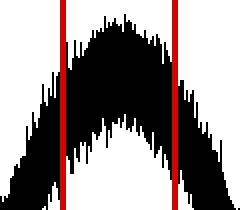

Forrige side🙂 🙁Tips til parameterestimering
Du skal altså prøve deg frem med kombinasjoner av verdier for v*, P og t0. Hver kombinasjon gir en modell vrmod(ti) som du så skal beregne kvadratet av forskjellen til de observerte dataene for. Sånn skal du holde på helt til du finner den kombinasjonen som gir minst mulig forskjell. Hvordan går vi frem? En mulighet er å finne et intervall av mulige parametere for hver av de 3 parameterene. Du kan f.eks. finne den verdien av t0 som passer best ved å se i hvilket intervall denne verdien må ligge. På figuren

ser vi et mulig sånt intervall. Er du enig i at t0 helt sikkert må ligge innenfor dette intervallet? Den kan vel ikke ligge utenfor? (hvis du har glemt hva t0 står for, gå noen sider tilbake, det er viktig at du har dette helt klart for deg!). Del så dette intervallet opp i 20 like steg, og vips du har 20 mulige verdier å prøve for t0. Trykk her!